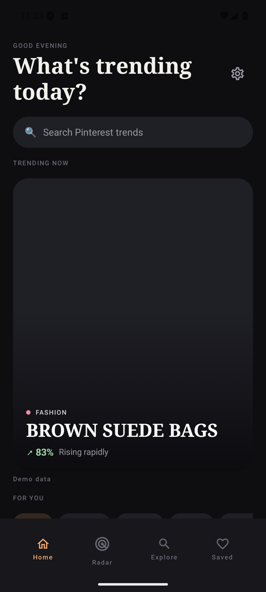
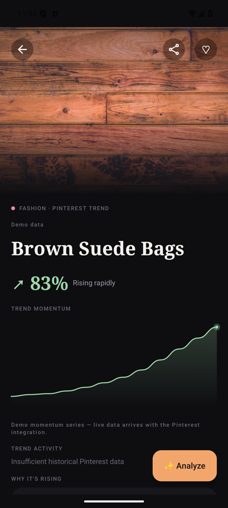
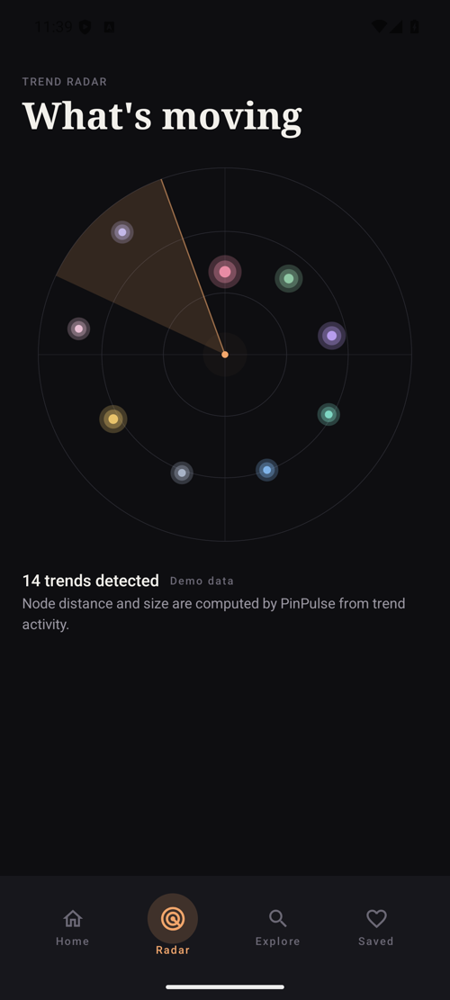
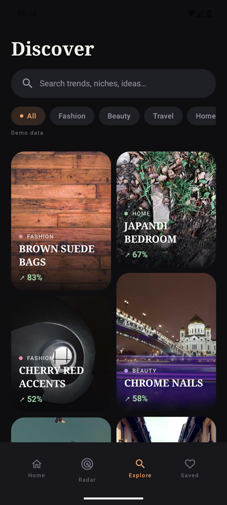

PinPulse helps creators, brands and small businesses discover what's about to trend on Pinterest — understand why it's rising, and turn it into original content before everyone else.
Currently in development — demo build



PinPulse turns Pinterest signals into a calm, visual morning ritual: open the app, see what's moving, understand why, and leave with a content idea.
A live radar of what's moving across fashion, home, food, travel and more — tap any category to zoom in.
Every chart and percentage comes from data the app actually has. When history isn't available, PinPulse says so instead of inventing numbers.
AI explains why a trend is rising and suggests content angles — always visually separated from Pinterest-provided data.
Take the underlying idea — never anyone's content — and generate your own original concept, hook, script and caption.
Bookmark trends into your own collections. Everything stays on your device.
Five trends to watch, every day, each with status, momentum and content opportunities.